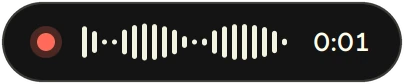

Pastes into any app at your cursor
A small pill shows a timer while you talk. Let go and the text is pasted; press Esc to cancel.
Friday releaseStatus for the team
Quick note for the team: the launch video is ready, and I'll share the final cut after lunch.
